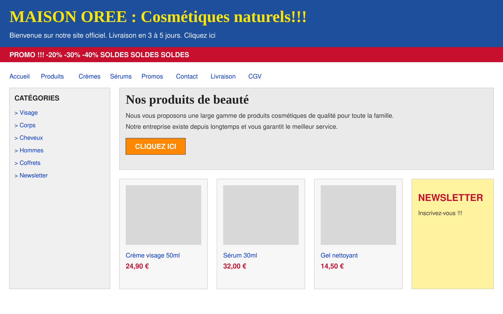

Votre site est souvent le premier contact avec votre marque. Faites-en une force.
Nous concevons des sites web modernes, cohérents et pensés pour présenter votre activité sous son meilleur jour.
Présenter mon projet →Clarifier avant d'embellir.
Un beau site qui n'explique pas votre offre ne sert à rien. Nous commençons par ce que vos visiteurs doivent comprendre en quelques secondes, puis nous construisons la hiérarchie, la typographie et les images autour.
Le résultat : un site cohérent avec votre marque, agréable à parcourir sur ordinateur comme sur mobile, et qui donne envie de vous contacter.
Ce que change une refonte.
Concept fictif : une marque de cosmétiques imaginaire. Déplacez le curseur pour comparer.

 Avant (concept)Après (concept)
Avant (concept)Après (concept)
Un message, pas dix.
Une promesse claire en haut de page remplace l'empilement de bandeaux et de liens.
De l'air pour respirer.
Les espacements et la typographie guident l'œil vers l'essentiel.
Un chemin évident.
Navigation réduite et un seul appel à l'action : le visiteur sait quoi faire.
Visuel conceptuel : il illustre une méthode. Il ne mesure aucun résultat commercial.
Ce que nous réalisons.
Création de site
Site vitrine ou de services, construit autour de votre offre et de votre image.
Refonte
Nous partons de l'existant pour moderniser l'image et l'expérience sans perdre ce qui fonctionne.
Landing pages
Une page, un objectif : présenter une offre, un lancement ou une campagne.
Expérience utilisateur
Navigation, lisibilité, version mobile : nous corrigeons ce qui freine vos visiteurs.
Contenus et fonctionnalités
Formulaires, galeries, sections adaptées à votre projet, intégrés proprement.
Mise en ligne
Vérifications finales et préparation de la publication avec vous.
Trois directions, trois univers.
Concepts créatifs non commandités, aucun client réel.
Un projet web, pas à pas.
Cadrage
Objectifs, public, contenus existants, contraintes.
Direction
Structure des pages, univers visuel, typographie.
Conception
Design des pages et développement, avec vos retours.
Livraison
Contrôle qualité, mise en ligne, prise en main.
Le calendrier et le budget sont définis selon votre projet.
Ce qu'on nous demande souvent.
Mon site actuel fonctionne à peu près. Une refonte est-elle utile ?
Conservez-vous mes textes et mon référencement ?
Puis-je modifier le site moi-même ensuite ?
Combien de temps et quel budget ?
Comment se passe la mise en ligne ?
Faisons de votre site une vraie vitrine.
Décrivez-nous votre projet et ce qui ne vous convient plus aujourd'hui.
Présenter mon projet →